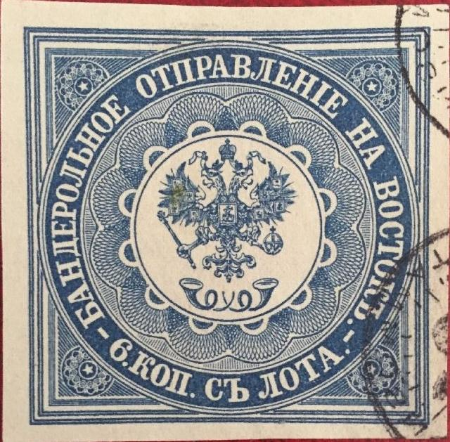
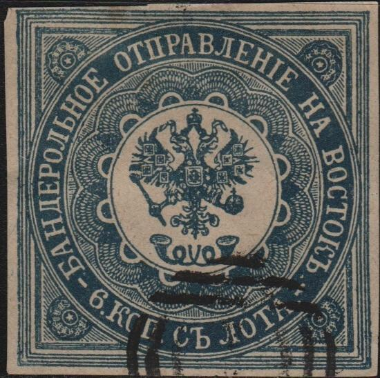

Return To Catalogue - Russian postoffices in Turkey, part 2 - Russian postoffices in Turkey, part 3 - Russian postoffices in Turkey, part 4 - Russia Overview
Note: on my website many of the
pictures can not be seen! They are of course present in the
catalogue;
contact me if you want to purchase the catalogue.
6 k blue
These stamps were used on newspapers from Russia to Turkey and vise-versa. They have dimensions 42.5 x 42.5 mm. Specialists distinguish the 1st issue in light blue (printed in sheets of 4 stamps in one row vertically making 4 different types), the 2nd issue in blue (printed in a square of 2x2 stamps with 4 different types) and the 3rd issue in dark blue on thick paper (printed in a square of 2x2 stamps, prepared, but never issued). Type 2 has some white spots in the outer lower right framelines. Type 4 has an oblique scratch below the letters "OP" of "KOP". Proofs exists in dark brown and red (carmine-rose). If I'm well informed, this stamp was used up to 1866. No stamps on cover appear to have survived.
Value of the stamps |
|||
vc = very common c = common * = not so common ** = uncommon |
*** = very uncommon R = rare RR = very rare RRR = extremely rare |
||
| Value | Unused | Used | Remarks |
| 6 k | RR | RRR | |
Cancels: In the Ferrary auction guide (8th sale, stamp 229) a stamp with a rectangular cancel can be found. I've seen others with circular town cancels (in black or blue).


Constantinopel cancel and "Franco" in a box cancel.

Forgeries exist of these stamps. Genuine stamps usually have small dots above the small half-moons surrounding the central circle (source: Serrane guide).

(Forgeries, sorry, I only have the upper part of the first image)

This forger even seems to have imitated two colour shades: blue
and dark blue

The lines of the second outer frame are too far away from the
central circle on top (zoom-in)
The above forgeries have the crown of the eagle too close to the circle above it, the serifs of the letters are also too big (compare for example the 'HA'). I know that the forger Fournier sold forgeries of this stamp (this is probably his 'first choice' forgery). Also, the lines from the second outer frame (the ones that should almost touch the central circle) are too far away from the central circle on top; clear white spaces can be distinguished. In the Serrane guide, this forgery is identified as the 'Faux de Geneve'.


Senf forgeries, with overprint "FACSIMILE.". On the
right hand side images the word "FACSIMILE." has been
cleverly disguised with a pencancel or bogus cancel.
Senf made a forgery of this stamp. This forgery was distributed with stamp journal the 'Illustrierten Briefmarken Journal', No 24 (17 December 1887) as an 'art supplement' or 'Kunstbeigabe'. The forgery always bears "FACSIMILE." on top. Sometimes, this word has been erased or a cancel has been placed on top of it (see image above). Genuine stamps always(?) have some blue dots in the white spaces around the small half-moons surrounding the central circle. This forgery does not have such dots. In the Senf forgeries I've seen there is a blue spot of ink above the last "E" of "OTPRAVLENIE" (in the white space just to the left of the upper right star decoration).

Another forgery with "FAUX" overprint. Genuine stamps
always(?) have some blue dots in the white spaces around the
small half-moons surrounding the central circle. This forgery
does not have such dots.



More primitive forgery with the letters not nicely printed (for
example, the '6' appears to slant backwards). I've also seen this
forgery in tete-beche with a numeral '3' dot cancel. The tips of
the wings of the eagle are different, the number of lines in the
corners is different etc. I think this forgery was made by the
forger Oneglia, judging from the bar cancel with "1" in
the center as was often used by Oneglia. In my view, the 6
parallel lines cancel was also used by Oneglia on his Tuscany
forgeries. In the book 'Philatelic forgers, their Lives and
Works' by V.Tyler, a copied page of the 'Philatelisten Zeitung 18
page 100, 1905' is reproduced with a forged Oneglia 6 parellel
lines cancel as on the second 6 k forgery shown above. Also a
numeral "3" cancel.
"Epreuves" from a Fournier album (his second choice
forgeries?). Reduced size, two different types.
I know that the forger Fournier sold forgeries of this stamp (the next image probably shows one of his 'second choice' forgeries). The following forgery has the crown touching the circle above it, the posthorns are placed too low. The ondulating patterns around the central circle are not similar to the genuine stamp (especially noticable in the overlapping areas, where they should form seme-circles in the genuine stamps). I've seen a similar forgery (but then in dark-blue) in a Fournier Album on the pages "Epreuves des cliches dont les timbres n'existent plus au stock" (proofs of stamps for which stamps were not available, see image above). The defects on the right hand side (lines in the upper right side and white spaces in the lower right side) are similar to the stamp shown below:


Fournier forgery, corresponding to the image on the left of the
'Epreuves' shown above

Another Fournier forgery with "FAUX" overprint, the
Russian "L" of "OTPRAVLENIE" doesn't have the
correct left foot, the "V" (B) of this word is not
slanting to the right and the "A" doesn't have a bottom
left serif. The stars in the four corners are badly done. In the
forgeries of this type I've seen, the wings of the eagle are
different from the genuine stamp, the half-circle patterns are
not so nicely done as in the genuine stamp. There is also a blue
ink blob just above the "A" of "OTPRAVLENIE".
This forgery corresponds to the right 'Epreuve' of the Fournier
album shown above.
{kind=link}
{kind=link}